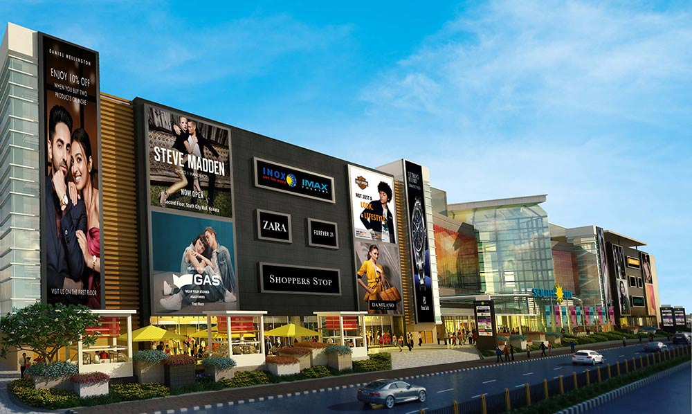
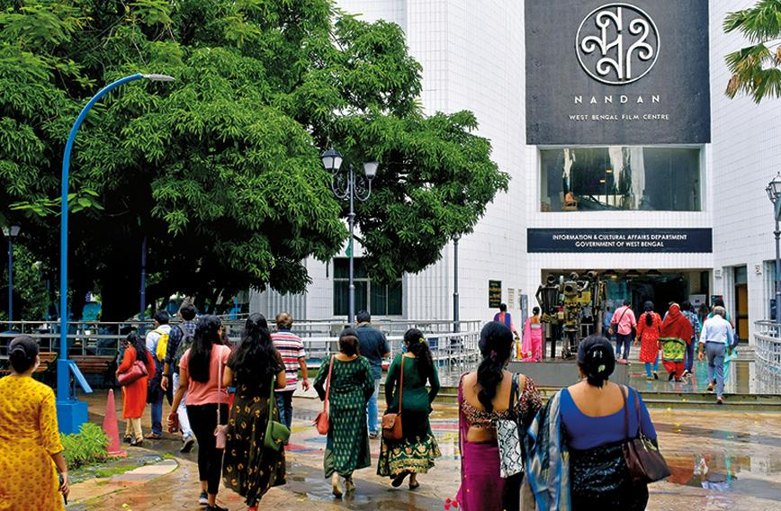
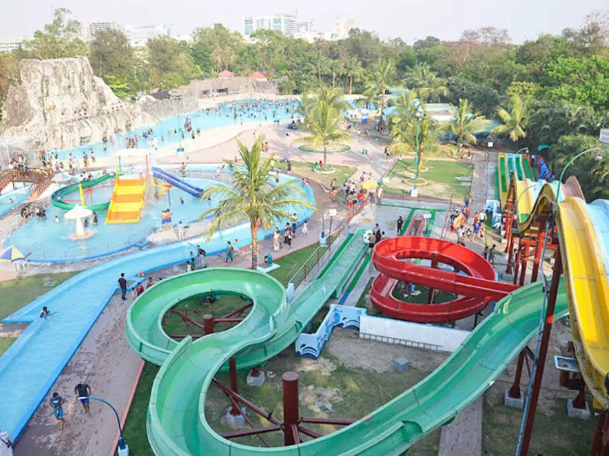
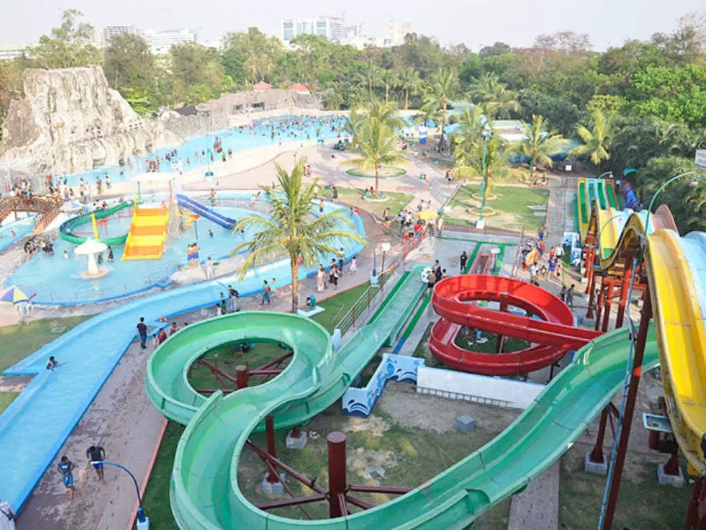

Kolkata is one of the busiest cities and is known for its lively life with busy shopping places, newly made malls, some unique places like book market in the university area, the adjacent coffee house which reflects the education and culture of the local people, one of largest flower market near the Howrah Bridge, famous fish markets, movie complexes, nightlife with bars and dance clubs in Park Street area, evening boat rides on the Hooghly river, adventure parks for all ages and many more activities.
Here are some glimpses:
Syambazar Esplande-Chowringe Gariahat Chinatown
Shopping In North Kolkata Heart of Kolkata Life Busy Junction in South Kolkata For Hakka Chinese Food
  

South City Mall Nandan - Movie Complex Salt Lake Stadium Nicco Park
Branded Shopping Mall Film Festivals Venue One of the Largest Stadium Amusement Theme Park
College Street and Indian Cofee House
College Street Book Market is a unique place with 100s of book stalls and stores spread over a large area in Central Calcutta near Kolkata University. The people in Kolkata are book lovers and this place gives a good glimpse of the local culture & education. The famous 300+ years old Indian Coffee House is located just beside the College Street Book Market – a place famous for its adda (friends gathering) sessions, a breeding place for political and cultural movements. Famous and eminent writers, poets, visionaries, politicians, film personalities, and journalists are often seen in this place.
College Street The Vintage Coffee House